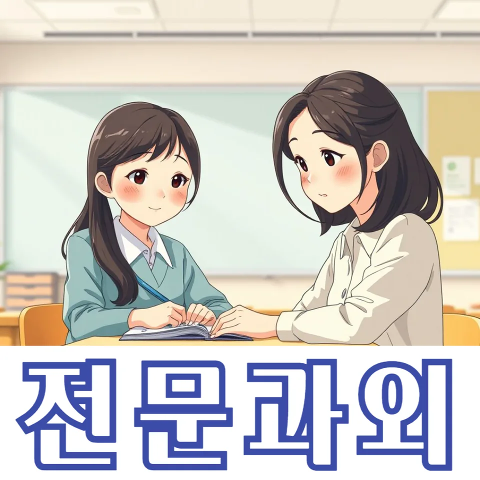

PageType : DONG
URL : /경기도과외/안양시과외/동안구과외/관양동과외/
지역 학습환경과 학생들의 변화
관양동과외를 시작하고 나면 학생들이 가장 먼저 달라지는 지점이 있습니다. 수업 전에는 “숙제는 했는데 왜 성적이 제자리일까”처럼 감으로 버티던 시간이 늘어 있었는데, 학습 환경을 분명히 정리한 뒤에는 책상 앞에서 보내는 시간이 질적으로 바뀝니다. 같은 문제를 풀더라도 체크해야 할 단서가 보이기 시작하면서, 시험 전날에 몰아서 외우는 방식에서 벗어나는 학생이 많습니다. 특히 관양동과외는 공부 동선을 단순화해 줍니다. 무엇을 먼저 풀고, 어디를 다시 확인할지 흐름이 생기니 학생의 표정과 속도가 동시에 안정됩니다.
또래 분위기도 영향을 줍니다. 학교에서 “다들 쉬는 날인데도 공부하냐”는 말이 오갈 때, 학생이 흔들리기 쉬운데 수업에서는 그런 흔들림을 데이터로 다룹니다. 관양동과외 수업 중에는 최근 오답 유형, 수업 집중도, 시간 분배를 함께 점검해 학습 태도를 ‘변화 가능한 습관’으로 바꾸려 합니다. 그래서 단기적으로는 내신 범위 대비가 빨라지고, 장기적으로는 공부 습관이 스스로 굴러가도록 설계됩니다.
학부모가 많이 고민하는 부분
학부모가 가장 자주 묻는 질문은 “우리 아이가 공부를 시작은 하는데 왜 끝이 약할까요?”입니다. 관양동과외 상담에서도 이 부분이 반복됩니다. 학생은 일단 문제를 펼치지만, 마무리 단계에서 실수가 자주 나거나 이해를 확인하지 않고 넘어가서 시험장에서 흔들립니다. 그래서 학부모는 과목을 바꾸기보다, 어떤 방식으로 점수를 잃는지부터 확인하고 싶어 합니다.
관양동과외는 내신 준비를 단순 진도관리로만 보지 않습니다. 학교 수업을 어떻게 받아 적는지, 복습은 언제 어떤 순서로 하는지, 시험 대비 기간에 어떤 우선순위를 세우는지까지 연결해 설명합니다. 학부모 입장에서는 “이번 달에 무엇을 봐야 하는지”가 분명해져야 안심이 되는데, 그 기준을 오답 정리 양식과 주간 학습 리포트로 맞춥니다. 결국 관양동과외는 학생의 변화뿐 아니라 학부모의 불안도 함께 줄이는 방향으로 운영됩니다.
학년이 올라갈수록 달라지는 공부
학년이 바뀌면 같은 시간 공부해도 결과가 달라지는데, 그 이유를 학생이 잘 모르는 경우가 많습니다. 관양동과외에서 자주 관찰되는 패턴은 중간 단계에서 생기는 ‘학습 공백’입니다. 초반에는 문제를 풀며 따라가지만, 중간 이후에 난도가 오르면 기본 개념을 다시 붙잡을 시간이 부족해집니다. 이때 학생은 열심히는 하는데 방향이 틀어져서 성적이 흔들립니다.
그래서 관양동과외는 학습 계획을 학년별로 재구성합니다. 기초 확인이 필요한 학기에는 개념-적용-오답 확인 루틴을 더 촘촘히 잡고, 시험기간에는 시간관리와 평가 기준을 우선으로 둡니다. 학생이 스스로 자기주도학습으로 넘어가는 과정이 단계별로 보이도록 설계되기 때문에, 학습 태도와 실제 학습량이 자연스럽게 맞춰집니다.
학교생활과 내신 준비
학교생활에서 가장 중요한 것은 ‘수업 태도’와 ‘복습의 타이밍’입니다. 관양동과외를 받는 학생들 중에는 수업 시간에는 집중하지만, 집에 가서 무엇을 확인해야 하는지 감이 없는 경우가 있습니다. 내신은 결국 교과서-수업-문항 해석의 연결 고리에서 점수가 갈리는데, 이 연결이 끊기면 시험 전날에 벼락처럼 공부해도 효율이 떨어집니다.
관양동과외는 학교에서 받은 자료를 중심으로 내신 준비를 정리합니다. 수업 내용이 시험 문항으로 어떻게 바뀌는지, 어떤 표현이 자주 출제되는지, 학생이 놓치기 쉬운 단원이 어디인지 확인합니다. 시험기간이 다가오면 무조건 더 많이 하라는 방식보다, 내신에서 점수를 만드는 유형부터 공략하도록 조정합니다. 학생은 불안해지기보다 계획에 따라 움직이니 시험장에서 답을 읽는 속도와 판단이 달라집니다.
자기주도학습이 중요한 이유
자기주도학습은 ‘혼자 공부하라’는 말이 아닙니다. 관양동과외에서 강조하는 자기주도학습은 선택과 책임이 생기는 구조입니다. 예를 들어 학생이 스스로 오늘 풀 분량을 정했더라도, 이해가 되었는지 확인하지 않으면 다음 날도 같은 실수를 반복합니다. 그래서 관양동과외는 자기주도학습의 핵심을 ‘검증’에 둡니다.
학생이 공부습관을 만들기 시작하면, 수업이 끝난 뒤에도 내신 학습이 자연스럽게 이어집니다. 주간 단위로 목표를 세우고, 결과를 보고하면서 다음 주 전략을 수정하는 흐름이 생기면 학습 태도가 한 단계 올라갑니다. 이 과정에서 학생은 “공부를 했다”가 아니라 “무엇이 남았고 무엇이 해결됐는지”를 말할 수 있게 됩니다. 학부모도 결과를 추적하기 쉬워져 시험 대비가 막연해지지 않습니다.
공부 습관이 성적에 미치는 영향
공부습관은 성적의 숫자가 아니라 행동의 누적입니다. 관양동과외를 통해 실제로 변화가 크게 나타나는 학생들은 대부분 ‘짧고 자주’가 아니라 ‘정리 방식이 정확한’ 케이스입니다. 같은 2시간을 쓰더라도 처음 30분의 방향이 맞으면 후반부에서 실수가 줄어듭니다. 반대로 시작이 흐리면 중간에 멈추거나, 오답을 다시 봐도 이해가 남지 않습니다.
그래서 관양동과외에서는 시간관리부터 점검합니다. 공부할 때 메모가 늘어나는 학생이 있는 반면, 메모를 줄이고 문제 풀이의 근거를 남기는 학생도 있습니다. 둘 다 가능하지만 결과로 이어지려면 내신 범위 안에서 자신에게 맞는 방식이 필요합니다. 학생이 시험 문제를 만나면 어떤 단서를 잡아야 하는지 확실해질 때 성적이 안정됩니다.
체크해야 할 학습 포인트
관양동과외를 통해 학생이 빠르게 성장하려면, 아래 포인트가 반복해서 점검되어야 합니다. 겉으로 열심히 보이는지보다 “점수로 이어지는 습관인지”를 중심으로 봐야 합니다.
- 수업 직후 복습 타이밍을 고정했는지
- 오답을 모아두는지, 원인을 분류해 다시 푸는지
- 내신에서 자주 등장하는 단원과 유형을 우선순위로 두는지
- 시험기간에 시간을 늘리기보다 취약 파트를 먼저 공략하는지
이 체크가 쌓이면 자기주도학습도 단단해집니다. 관양동과외는 학생이 계획을 세우는 순간부터, 실행과 확인의 간격을 줄이는 데 집중합니다. 그러면 학습이 끊기지 않고 학교생활과도 자연스럽게 맞물립니다.
자주 묻는 질문
관양동과외는 어떤 학생에게 더 도움이 되나요?
수업은 따라가지만 내신 시험에서 실수가 잦거나, 공부습관이 들쭉날쭉해서 성적 변동이 큰 학생에게 특히 효과가 좋습니다. 관양동과외는 학교생활에서 생기는 공백을 확인하고 계획으로 연결하는 방식입니다.
시험기간에는 어떻게 공부 계획을 잡나요?
관양동과외에서는 시험 범위 내에서 점수로 직결되는 유형부터 순서를 정합니다. 시간관리도 “더 오래”보다 “더 정확히” 움직이도록 조정해 불안을 줄입니다.
자기주도학습을 시작하려면 무엇부터 하면 되나요?
관양동과외는 목표를 세우는 것에서 끝내지 않고, 이해 확인과 오답 검증을 루틴으로 만듭니다. 학생이 스스로 점검할 수 있게 되는 순간 학습이 오래 유지됩니다.
학부모는 뭘 보면 불안이 줄어드나요?
관양동과외에서는 내신 준비 과정에서 무엇이 개선됐는지 보이도록 리포트를 연결합니다. 단순 진도보다 오답 유형 변화와 복습 습관이 드러나게 안내합니다.
과목 선택이나 학년 변화는 어떻게 반영하나요?
관양동과외는 학년이 올라갈수록 난도와 평가 방식이 달라지는 점을 반영해 학습 전략을 바꿉니다. 과목 선택도 성적만이 아니라 공부 태도와 이해도 흐름을 함께 고려합니다.
